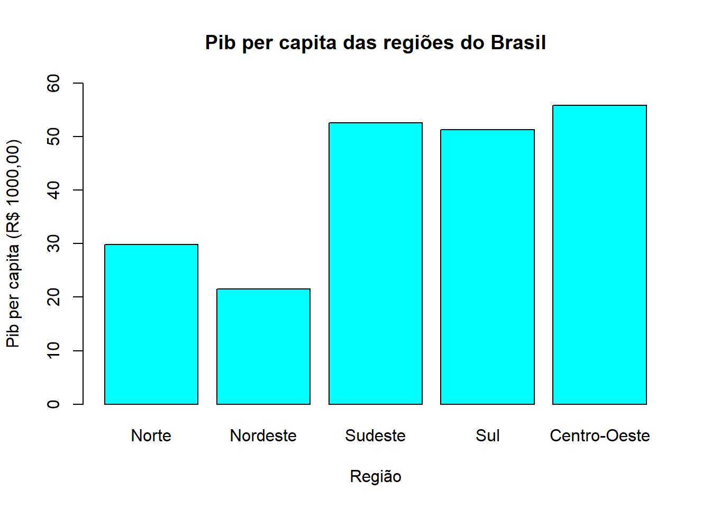

install.packages("dplyr")
install.packages("tidyr")6 Manipulação de dados
6.1 Introdução
Tendo conhecido os tópicos fundamentais a respeito da lógica de programação nos quatro primeiros capítulos e tendo em mãos os conhecimentos básicos a respeito da leitura de arquivos de dados com base no conteúdo visto no capítulo anterior, o próximo passo do aprendizado da introdução à programação e à ciência de dados é entender os fundamentos básicos da manipulação de dados.
Entende-se por manipulação de dados as técnicas necessárias para organizar bases de dados de acordo com um determinado objetivo, corrigindo erros, implementando melhorias e deixando-as com as propriedades desejadas. É fundamental que o economista domine as técnicas de manipulação de dados pois a etapa de tratamento das informações requer esse conhecimento e deve ser aplicada antes de qualquer análise empírica.
É comum que informações distintas estejam hospedadas em diferentes fontes. Mas também é comum que múltiplas bases de dados sejam necessárias para gerar uma única informação. Por exemplo, o pib per capita requer duas bases de dados, o pib e a população, as quais estão em diferentes fontes. Assim, o economista terá de importar ambas as bases de dados, uní-las em uma única planilha e em seguida fazer as devidas manipulações para transformar o pib e a população no pib per capita.
Por esse motivo, esse capítulo é subdividido em duas etapas fundamentais. Na primeira etapa, são repassadas as técnicas de junção de bases de dados, onde o aluno irá aprender a unir objetos sob diferentes perspectivas de união. Em seguida, na segunda etapa são repassadas as técnicas de manipulação de dados, onde o aluno aprenderá as principais ferramentas úteis no gerenciamento de informações.
6.1.1 Bibliotecas necessárias
Usaremos duas bibliotecas indispensáveis na manipulação de dados com R, a biblioteca dplyr e a biblioteca tidyr. Essas bibliotecas dispõem de funções úteis no gerenciamento de bases de dados que dão uma intérfase simples e compreensível às técnicas de gerenciamento de dados. Portanto, antes de mais nada é preciso instalar as bibliotecas e librerá-las para o uso.
library(dplyr)FALSE
FALSE Attaching package: 'dplyr'FALSE The following objects are masked from 'package:stats':
FALSE
FALSE filter, lagFALSE The following objects are masked from 'package:base':
FALSE
FALSE intersect, setdiff, setequal, unionlibrary(tidyr)[[1]]
[1] TRUE
[[2]]
[1] TRUE6.1.2 A função pip (%>%)
A biblioteca tidyr possui uma função que permite agrupar múltiplas linhas de comando em apenas um único comando. Essa função é conhecida como pip e o seu uso é ativado por meio do comando %>%. Esse procedimento facilita a manipulação de dados uma vez que permite que múltiplas tarefas sejam executadas em um único bloco de ordens ao computador. Para exemplificar, considere a base nativa sobre carros mtcars. Suponha que queiramos preservar apenas os carros com câmbio automático e checar o consumo médio desses carros. Sem as bibliotecas de manipulação, essa tarefa seria realizada em duas linhas de comando separadamente, conforme demonstrado a seguir:
dt = mtcars[mtcars$am == 1,]
mean(dt$mpg)[1] 24.39231Com a função pip, é possível associar a segunda linha à primeira e criar um bloco de ordens em um único comando. Assim, o output gerado será o resultado das ordens indicadas no bloco de ordens. No caso do exemplo anterior, devemos dar a ordem para preservar apenas am = 1, acionamos o pip e em seguida ordenamos para calcular a média do consumo, conforme demonstrado a seguir:
mtcars[mtcars$am == 1,] %>% summarise(mean(mpg)) mean(mpg)
1 24.39231Note que o resultado é o mesmo em ambas as abordagens.
6.2 União de bases de dados (join)
Muitas vezes os economistas se deparam com a necessidade de unir bases de dados para obter informações úteis. Por exemplo, um economista que busca analisar o PIB per capita precisa operacionalizar com uma base de dados de crescimento (PIB) e uma base de dados sobre população. Um economista que busca estudar mercados de capitais pode precisar lidar com uma base de dados sobre preços de ações e outra base sobre taxas de câmbio. Em resumo, os economistas precisam lidar com múltiplas bases de dados e precisam conhecer as técnicas de junção de bases de dados distintas.
A biblioteca dplyr possui um conjunto de funções que facilita a união de bases de dados de acordo com a necessidade e a configuração dos dados. As junções de bases de dados devem ser feitas com base em um código de identificação dos indivíduos. Imagine que queiramos unir as duas tabelas a seguir:
\[ x = \left[\begin{array}{ccc} ID & X1 & X2\\ 1 & A & E\\ 2 & B & F\\ 3 & C & G\\ 4 & D & H\\ \end{array}\right] \quad \quad \quad \quad y = \left[\begin{array}{cc} ID & X3\\ 1 & I\\ 3 & J\\ 5 & K\\ \end{array}\right] \]
Se ID é a identificação do indivíduo, então as duas tabelas podem ser unidas de acordo com essa identificação. No entanto, alguns elementos em x não estão disponíveis em y do mesmo modo que alguns elementos em y não estão disponíveis em x. É preciso, portanto, que o usuário saiba quais informações são do seu interesse em cada tabela para fazer a união das bases.
Baseado nisso, a biblioteca dplyr possui uma série de funções ideais para a junção de bases de dados que permite que o usuário una duas planilhas de acordo com um código de identificação e com base no procedimento ideal para a junção. Basicamente são seis tipos de junções que podem ser efetuadas. As funções e os tipos de junção possibilitados por essas funções estão listados a seguir:
left_join(x,y): Junção à esquerda. Mantém inalterados todos os indivíduos da tabela a esquerda (Tabela x) e posiciona os valores correspondentes da tabela da direita (Tavela y) à direita das colunas da primeira tabela.
right_join(x,y): Junção à direita. Mantém inalterados todos os indivíduos da tabela a direita (Tabela y) e posiciona os valores correspondentes da tabela da esquerda (Tavela x) à direita das colunas da segunda tabela.
inner_join(x,y): Intersecção. Gera uma tabela z com as colunas de x e y contendo apenas os indivíduos que possuem informações em ambas as tabelas.
semi_join(x,y): Intersecção. Gera uma tabela semelhante à tabela x, sem as colunas da tabela y, porém, contendo apenas os indivíduos que estão presentes em x e y.
full_join(x,y): União de tabelas. Gera uma tabela com todas as colunas e todas as linhas de x e y. Nesse caso, todos os indivíduos presentes em x e y são preservados no output.
anti_join(x,y): Gera uma tabela contendo todos os indivíduos da tabela x que não estão presentes na tabela y.
Essas definições podem ser facilmente visualizadas na figura a seguir:

6.2.1 Junção à esquerda (left_join(x,y))
Considere as tabelas x e y apresentadas anteriormente. Suponha que queiramos colocar a coluna X3 da tabela y ao lado da coluna X2 da tabela x, preservando todos os quatro indivíduos da tabela x. Nesse caso, podemos usar o left_join(), posicionando x à esquerda e y à direita. Para tanto, vamos digitar as tabelas como data frames e vamos nomeá-las de “tabela1” e “tabela2”.
tabela1 = data.frame(
ID = 1:4, X1 = LETTERS[1:4], X2 = LETTERS[5:8]
)
tabela2 = data.frame(
ID = c(1,3,5), X3 = LETTERS[9:11]
)Agora vamos gerar uma tabela3, unindo as duas tabelas com o left_join(). Para tanto, precisamos indicar qual das tabelas será posicionada à esquerda e à direita nos parâmetros x e y da função, respectivamente, e também precisamos indicar o código de identificação do indivíduo entre aspas no parâmetro by da função. Esse procedimento pode ser feito conforme a seguir:
tabela3 = left_join(x = tabela1, y = tabela2, by = "ID")Esse procedimento gera um data frame com as seguintes propriedades:
print(tabela3) ID X1 X2 X3
1 1 A E I
2 2 B F <NA>
3 3 C G J
4 4 D H <NA>Note que os indivíduos com ID 2 e 4 apresentam valores NA na coluna X3. Isso ocorre porque esses indivíduos não estão presentes na tabela2 e mesmo assim permanecem no output. Como não existem valores de referência para esses indivíduos nessa coluna, a linguagem retorna valores vazios.
6.2.2 Junção à direita (right_join(x,y))
Suponha agora que precisamos preservar apenas os indivíduos da tabela2, colocando as colunas da tabela1 à direita das colunas da tabela2. Nesse caso, o ideal é usar o right-join(). Nesse tipo de junção, o parâmetro y indica qual planilha permanecerá com as linhas inteiramente preservadas, ao passo que o parâmetro x mostra a planilha que aparecerá à esquerda da tabela2 no output. Esse procedimento pode ser feito conforme indicado a seguir:
tabela3 = right_join(x = tabela1, y = tabela2, by = "ID")
print(tabela3) ID X1 X2 X3
1 1 A E I
2 3 C G J
3 5 <NA> <NA> KNote que agora as colunas X1 e X2 apresentam NAs para o indivíduo 5. Isso ocorre porque esse indivíduo não está presente na tabela1 mas está presente na tabela2. Como todas as linhas da tabela2 são preservadas nesse tipo de junção, então a linguagem atribui valores vazios para essas células.
6.2.3 Intersecção (inner_join(x,y))
Considere agora o caso em que seja necessário preservar no output apenas os indivíduos que estão tanto na tabela1 quanto na tabela2. Nesse caso, o ideal é fazer uma intersecção usando o inner_join(). A planilha resultante irá mostrar as colunas de ambas as tabelas, porém, contendo apenas as linhas comuns às duas planilhas. Esse procedimento pode ser feito conforme demonstrado a seguir:
tabela3 = inner_join(x = tabela1, y = tabela2, by = "ID")
print(tabela3) ID X1 X2 X3
1 1 A E I
2 3 C G JNote que o output resultante só possui os indivíduos 1 e 2. Isso ocorre porque esses são os únicos indivíduos que estão nas duas planilhas.
6.2.4 Intersecção (semi_join(x,y))
Considere agora o caso em que seja necessário preservar apenas os indivíduos que estão presentes em ambas as planilhas assim como no caso anterior. Porém, considere que não seja necessário preservar as colunas da tabela2 no output, isto é, estamos interessados em preservar apenas as colunas da tabela1, mas mantendo apenas as linhas referentes aos indivíduos que estão presentes em ambas as planilhas. Nesse caso, o ideal é usar o semi_join(), procedendo conforme demonstrado a seguir:
tabela3 = semi_join(x = tabela1, y = tabela2, by = "ID")
print(tabela3) ID X1 X2
1 1 A E
2 3 C GRepare que apenas os indivíduos 1 e 2 são preservados no output, assim como no caso do inner_join(). Porém, note que agora a coluna X3 não aparece no output.
6.2.5 União (full_join(x,y))
Agora considere o caso em que seja necessário preservar todos os indivíduos presentes em ambas as tabelas, mantendo também todas as colunas presentes nas duas tabelas. Nesse caso, o ideal é usar o full_join(), procedendo conforme indicado a seguir:
tabela3 = full_join(x = tabela1, y = tabela2, by = "ID")
print(tabela3) ID X1 X2 X3
1 1 A E I
2 2 B F <NA>
3 3 C G J
4 4 D H <NA>
5 5 <NA> <NA> K6.2.6 Exclusão (anti_join(x,y))
Por fim, considere o caso em que seja necessário gerar uma tabela preservando todos os indivíduos que estão na tabela1 mas que não aparecem na tabela2. Nesse caso, o ideal é usar o anti_join(), procedendo conforme indicado a seguir:
tabela3 = anti_join(x = tabela1, y = tabela2, by = "ID")
print(tabela3) ID X1 X2
1 2 B F
2 4 D HNote que a coluna X3 não aparece no output. Isso é esperado dado que não faz sentido incluir essa coluna na planilha resultante pois X3 só está presente na tabela2 e os indivíduos contidos no output não estão presentes na tabela2. Como consequência, incluir X3 no output resultaria em uma coluna de NAs.
6.2.7 Exemplo: Unindo o pib e a população
Acessando o sistema SIDRA do IBGE, podemos encontrar o pib das regiões georgáficas brasileiras para o ano de 2021 em R$ 1000 no link https://sidra.ibge.gov.br/geratabela?format=br.csv&name=tabela5938.csv&terr=NS&rank=-&query=t/5938/n2/all/v/37/p/last%201/d/v37%200/l/v,p,t. Também podemos encontrar a população residente estimada no link https://sidra.ibge.gov.br/geratabela?format=br.csv&name=tabela6579.csv&terr=NS&rank=-&query=t/6579/n2/all/v/all/p/2021/l/v,p,t. Vamos importar o pib para o R como um data frame de nome pib e a população como um data frame de nome pop.
pib = read.csv(
"https://sidra.ibge.gov.br/geratabela?format=br.csv&name=tabela5938.csv&terr=NS&rank=-&query=t/5938/n2/all/v/37/p/last%201/d/v37%200/l/v,p,t",
skip = 3,
header = TRUE,
sep = ";"
)
pib = pib[1:5,]
colnames(pib) = c("Nivel", "regiao", "pib")
pop = read.csv(
"https://sidra.ibge.gov.br/geratabela?format=br.csv&name=tabela6579.csv&terr=NS&rank=-&query=t/6579/n2/all/v/all/p/2021/l/v,p,t",
skip = 3,
header = TRUE,
sep = ";"
)
pop = pop[1:5,-1]
colnames(pop) = c("regiao", "populacao")print(pib) Nivel regiao pib
1 GR Norte 564063747
2 GR Nordeste 1243103280
3 GR Sudeste 4712981720
4 GR Sul 1559827628
5 GR Centro-Oeste 932165625print(pop) regiao populacao
1 Norte 18906962
2 Nordeste 57667842
3 Sudeste 89632912
4 Sul 30402587
5 Centro-Oeste 16707336Note que o nome da região está presente em ambas as planilhas. Agora vamos unir as duas planilhas usando o inner_join() criando um data frame de nome pib_regioes usando o nome da região como código de identificação.
pib_regioes = inner_join(x = pib, y = pop, by = "regiao")
print(pib_regioes) Nivel regiao pib populacao
1 GR Norte 564063747 18906962
2 GR Nordeste 1243103280 57667842
3 GR Sudeste 4712981720 89632912
4 GR Sul 1559827628 30402587
5 GR Centro-Oeste 932165625 16707336Podemos agora adicionar uma nova coluna contendo o pib per capita de cada região, que é a razão entre o pib e a população.
pib_regioes$pib_percapita = pib_regioes$pib/pib_regioes$populacao
print(pib_regioes) Nivel regiao pib populacao pib_percapita
1 GR Norte 564063747 18906962 29.83365
2 GR Nordeste 1243103280 57667842 21.55626
3 GR Sudeste 4712981720 89632912 52.58093
4 GR Sul 1559827628 30402587 51.30575
5 GR Centro-Oeste 932165625 16707336 55.79379Podemos também apresentar esses valores em uma figura (conteúdo que será abordado nos próximos capítulos).
barplot(
pib_regioes$pib_percapita,
col = "cyan",
names.arg = pib_regioes$regiao,
main = "Pib per capita das regiões do Brasil",
xlab = "Região",
ylab = "Pib per capita (R$ 1000,00)",
ylim = c(0,60)
)
6.3 Gerando estatísticas com summarise
Imagine o caso em que seja preciso extrair estatísticas de uma base de dados. Nesse caso, o usuário pode usar a indexação pela coluna para realizar essa tarefa. Por exemplo, para obter o peso médio dos carros na base de dados mtcars, o usuário pode fazer o seguinte:
mean(mtcars$wt)[1] 3.21725No entanto, caso seja necessário calcular essa mesma estatística ou outras estatísticas para múltiplas colunas, a escrita do código pode tornar-se repetitiva e ineficiente. Para contornar esse problema, a biblioteca dplyr disponibiliza a função summarise que é ideal para calcular estatísticas com base em informações de um dado objeto. Para utilizar essa função, o usuário deve proceder com a seguinte lógica:
nome da base de dados %>%
summarise(
nome da estatistica 1 = estatística 1,
nome da estatistica 2 = estatística 2,
...
nome da estatistica n = n-ésima estatística
)Por exemplo, caso seja necessário calcular o peso médio, o consumo médio e o número total de carros na base mtcars, o usuário deve proceder conforme a seguir:
mtcars %>%
summarise(
peso_medio = mean(wt),
consumo_medio = mean(mpg),
numero_carros = length(mpg)
) peso_medio consumo_medio numero_carros
1 3.21725 20.09062 326.3.1 Gerando estatísticas para todas as colunas
Caso o usuário precise gerar estatísticas para todas as variáveis de uma base de dados, ele pode usar a função summarise_all para escrever o comando em uma única linha em vez de escrever as estatísticas uma a uma na função summarise, o que deixaria o código maior e menos eficiente. A lógica de uso da função summarise_all é a seguinte:
nome da base de dados %>%
summarise_all(.funs = c("função 1", "função 2", ... "função n"))Para exemplificar, imagine que seja preciso calcular a média, o desvio padrão e a mediana de todas as variáveis da base de dados mtcars. Nesse caso, deve-se proceder conforme indicado a seguir:
mtcars %>%
summarise_all(.funs = c("mean", "sd", "median")) mpg_mean cyl_mean disp_mean hp_mean drat_mean wt_mean qsec_mean vs_mean
1 20.09062 6.1875 230.7219 146.6875 3.596563 3.21725 17.84875 0.4375
am_mean gear_mean carb_mean mpg_sd cyl_sd disp_sd hp_sd drat_sd
1 0.40625 3.6875 2.8125 6.026948 1.785922 123.9387 68.56287 0.5346787
wt_sd qsec_sd vs_sd am_sd gear_sd carb_sd mpg_median
1 0.9784574 1.786943 0.5040161 0.4989909 0.7378041 1.6152 19.2
cyl_median disp_median hp_median drat_median wt_median qsec_median vs_median
1 6 196.3 123 3.695 3.325 17.71 0
am_median gear_median carb_median
1 0 4 26.3.2 Gerando estatísticas para colunas específicas
Caso as mesmas estatísticas devam ser aplicadas apenas a uma parte das variáveis da base de dados, então provavelmente seja mais eficiente usar a função summarise_at. Essa função permite que o usuário indique as variáveis e as estatísticas que devem ser calculadas em uma única linha sem a necessidade de repetir os métodos de cálculo das estatísticas com o summarise. A lógica de uso do summarise_at está delimitada a seguir:
{r, eval=FALSE}
nome da base de dados %>%
summarise_all(
.vars = c("variável 1", "variável 2", ... "variável n")
.funs = c("função 1", "função 2", ... "função n")
)Para exemplificar, suponha que seja necessário calcuar a média, o desvio padrão e a mediana das colunas mpg, wt e qseq da base de dados mtcars. Nesse caso, o usuário deve proceder conforme a seguir:
mtcars %>%
summarise_at(
.vars = c("mpg", "wt", "qsec"),
.funs = c("mean", "sd", "median")
) mpg_mean wt_mean qsec_mean mpg_sd wt_sd qsec_sd mpg_median wt_median
1 20.09062 3.21725 17.84875 6.026948 0.9784574 1.786943 19.2 3.325
qsec_median
1 17.71Caso existam valores NAs na base de dados, o usuário pode adicionar o na.rm = TRUE antes de fechar o parênteses principal da função, ou seja:
mtcars %>%
summarise_at(
.vars = c("mpg", "wt", "qsec"),
.funs = c("mean", "sd", "median"),
na.rm = TRUE
) mpg_mean wt_mean qsec_mean mpg_sd wt_sd qsec_sd mpg_median wt_median
1 20.09062 3.21725 17.84875 6.026948 0.9784574 1.786943 19.2 3.325
qsec_median
1 17.716.3.3 Gerando estatísticas condicionais
Imagine o caso em que seja preciso calcular uma estatística específica apenas para as variáveis que atendam a uma dada condição. Por exemplo, imagine que seja necessário calcular a média apenas para as colunas que tenham elementos numéricos. Nesse caso, o usuário pode usar a função summarise_if, da biblioteca dpplyr. Essa função permite que as estatísticas desejadas sejam obtidas apenas para as variáveis que atendam a uma dada condição especificada pelo usuário. Essa condição especificada precisa, contudo, advir de uma função com output TRUE ou FALSE, de modo que as estatísticas serão calculadas para as variáveis que obedecerem a condição de afirmação. Para usar o summarise_if, o usuário deve seguir a seguinte lógica:
nome da base de dados %>%
summarise_if(condição dada por função, .funs = c("estatística"))Para exemplificar, considere que seja necessário calcular a média, o desvio padrão e a mediana apenas das variáveis da base de dados mtcars que possuem soma maior que 100. Nesse caso, é preciso criar uma função que especifique essa condição e aplicá-la no summarise_if. Esse procedimento é demonstrado a seguir:
f = function(x){
if(x > 100){
return(TRUE)
}else{
return(FALSE)
}
}
mtcars %>%
summarise_if(f, .funs = c("mean","sd", "median")) disp_mean hp_mean disp_sd hp_sd disp_median hp_median
1 230.7219 146.6875 123.9387 68.56287 196.3 1236.4 Criando Variáveis (mutate)
Nos primeiros capítulos vimos que é possível adicionar variáveis em um objeto por meio da indexação. Por exemplo, usando a base sobre carros mtcars, se quisermos adicionar uma coluna de nome cambio com valor “manual” se am = 0 e “automatico” se am = 1, poderíamos fazer:
mtcars$manual = ifelse(mtcars$am == 0, "manual", "automatico")Similarmente, poderíamos fazer essa mesma tarefa usando a indexação pelo nome da coluna:
mtcars[,"cambio"] = ifelse(mtcars[,"am"] == 0, "manual", "automatico")Esses procedimentos são perfeitamente válidos e funcionam de maneira irrestrita. Porém, note que cada coluna adicionada precisa ser criada em uma linha específica. Note também que a indexação sempre precisa ser informada, tornando a escrita repetitiva e ineficiente. Para melhorar a eficiência da escrita, a biblioteca dplyr disponibiliza uma função nomeada mutate. Essa função permite que múltiplas colunas sejam criadas sem a necessidade de informar a indexação em cada linha de comando. Para melhorar o seu uso, recomenda-se que a função mutate seja usada em conjunto com a função pip, o que permite que a linguagem R reconheça as indexações das colunas sem a necessidade de declará-las. A usuabilidade dessa função segue conforme a seguir:
nome da base de dados %>%
mutate(
nome da coluna criada = operação para criar a coluna,
nome da outra coluna criada = operação para criar mais uma coluna,
...
nome da outra coluna criada = operação para criar mais uma coluna
)Por exemplo, para adicionarmos a coluna cambio especificada anteriormente na base de carros mtcars, podemos proceder conforme a seguir:
dt = mtcars %>%
mutate(
cambio = ifelse(am == 1, "automatico", "manual")
)
head(dt) mpg cyl disp hp drat wt qsec vs am gear carb manual
Mazda RX4 21.0 6 160 110 3.90 2.620 16.46 0 1 4 4 automatico
Mazda RX4 Wag 21.0 6 160 110 3.90 2.875 17.02 0 1 4 4 automatico
Datsun 710 22.8 4 108 93 3.85 2.320 18.61 1 1 4 1 automatico
Hornet 4 Drive 21.4 6 258 110 3.08 3.215 19.44 1 0 3 1 manual
Hornet Sportabout 18.7 8 360 175 3.15 3.440 17.02 0 0 3 2 manual
Valiant 18.1 6 225 105 2.76 3.460 20.22 1 0 3 1 manual
cambio
Mazda RX4 automatico
Mazda RX4 Wag automatico
Datsun 710 automatico
Hornet 4 Drive manual
Hornet Sportabout manual
Valiant manualNote que agora já não é mais necessário utilizar o cifrão ou indexar pelo nome das colunas.
6.4.1 Adicionando variáveis multicategóricas (mutate + case_when)
A função ifelse é bastante útil para usar em conjunto com o mutate para gerar variáveis de duas categorias, uma vez que essa função baseia-se nas condições de afirmação e negação. Contudo, quando se trata de variáveis com múltiplas categorias, o ifelse pode ser complicado e ineficiente. Para contornar essa dificuldade, a biblioteca dplyr disponibiliza a função case_when que permite que o usuário realize operações com múltiplas condições ao mesmo tempo. De maneira rústica, o case_when funciona como um ifelse agrupado para múltiplas condições de afirmação e negação. Seu método de uso deve seguir as seguintes propriedades.
case_when(
condição para a categoria 1 ~ resposta para a categoria 1,
condição para a categoria 2 ~ resposta para a categoria 2,
condição para a categoria 3 ~ resposta para a categoria 3,
...
TRUE ~ resposta para o caso contrário
)Para exemplificar, suponha que queremos adicionar na base de dados mtcars uma coluna de nome potencia classificando a potência do carro conforme o número de cilindros, seguindo as categorias listadas a seguir:
Potência baixa -> Carros com 4 cilindros.
Potência média: Carros com 6 cilindros.
Potência alta: Carros com 8 cilindros.
Nesse caso, devemos proceder conforme a seguir:
dt = mtcars %>%
mutate(
potencia = case_when(
cyl == 4 ~ "Potência baixa",
cyl == 6 ~ "Potência média",
TRUE ~ "Potência alta"
)
)
head(dt) mpg cyl disp hp drat wt qsec vs am gear carb manual
Mazda RX4 21.0 6 160 110 3.90 2.620 16.46 0 1 4 4 automatico
Mazda RX4 Wag 21.0 6 160 110 3.90 2.875 17.02 0 1 4 4 automatico
Datsun 710 22.8 4 108 93 3.85 2.320 18.61 1 1 4 1 automatico
Hornet 4 Drive 21.4 6 258 110 3.08 3.215 19.44 1 0 3 1 manual
Hornet Sportabout 18.7 8 360 175 3.15 3.440 17.02 0 0 3 2 manual
Valiant 18.1 6 225 105 2.76 3.460 20.22 1 0 3 1 manual
cambio potencia
Mazda RX4 automatico Potência média
Mazda RX4 Wag automatico Potência média
Datsun 710 automatico Potência baixa
Hornet 4 Drive manual Potência média
Hornet Sportabout manual Potência alta
Valiant manual Potência média6.5 Filtrando valores nas colunas
Nos capítulos anteriores vimos que é possível apagar ou manter valores nas colunas usando a indexação. Por exemplo, caso seja preciso apagar os carros com câmbio manual (am = 0) na base mtcars e manter apenas os carros com câmbio automático (am = 1), podemos proceder conforme a seguir:
dt = mtcars[mtcars$am == 1,]No entanto, o uso da indexação para filtrar valores pode ser complicado e ineficiente quando é necessário aplicar múltiplass condições de escolha de valores. Para contornar esse detalhe, a biblioteca dplyr disponibiliza a função filter que permite que o usuário selecione ou remova valores dos objetos com múltiplas condições de seleção de valores sem a necessidade de usar a indexação. O uso dessa função deve seguir as propriedades listadas a seguir:
nome do objeto %>%
filter(
primeira condição de seleção ou remoção de valor,
segunda condição de seleção ou remoção de valor,
terceira condição de seleção ou remoção de valor,
...
n-ésima condição de seleção ou remoção de valor
)Para exemplificar, considere que seja necessário preservar na base de dados mtcars apenas os carros com câmbio automático (am = 1) que tenham seis cilindros (cyl = 6), que tenham pelo menos quatro carburadores \((carb 4 \geq 6)\) e que pesem mais de duas toneladas \((wt>2)\). Nesse caso, devemos proceder conforme a seguir:
dt = mtcars %>%
filter(
am == 1,
cyl == 6,
carb >= 4,
wt > 2
)
head(dt) mpg cyl disp hp drat wt qsec vs am gear carb manual
Mazda RX4 21.0 6 160 110 3.90 2.620 16.46 0 1 4 4 automatico
Mazda RX4 Wag 21.0 6 160 110 3.90 2.875 17.02 0 1 4 4 automatico
Ferrari Dino 19.7 6 145 175 3.62 2.770 15.50 0 1 5 6 automatico
cambio
Mazda RX4 automatico
Mazda RX4 Wag automatico
Ferrari Dino automatico6.6 Selecionando colunas na planilha (select)
Em muitas ocasiões, algumas colunas de uma base de dados não são de interesse do economista ou não têm utilidade na tarefa designada. Por exemplo, se o economista precisa computar o pib per capita, ele precisa apenas do pib e da população, e quaisquer outras colunas presentes na planilha de informações podem ser desconsideradas. A tarefa de deletar essas colunas pode ser feita usando a indexação, porém, para facilitar essa tarefa, a biblioteca dplyr disponibiliza a função select, que permite que o usuário preserve na base de dados apenas aquelas colunas do seu interesse sem a necessidade de usar a indexação, reduzindo o número de linhas do código e melhorando a sua eficiência.
A função select possui as seguintes propriedades de uso:
nome da base de dados %>%
select(nomes das colunas que devem permanecer na planilha separados por vírgula)Ou
nome da base de dados %>%
select(-nomes das colunas que devem desaparecer da planilha separados por vírgula)Para exemplificar, considere a base de dados mtcars e suponha que só seja necessário usar as colunas am, mpg e wt, de modo que as demais colunas podem ser deletadas. Usando a função select, podemos fazer essa tarefa procedendo conforme indicado a seguir:
mtcars %>%
select(am, mpg, wt) am mpg wt
Mazda RX4 1 21.0 2.620
Mazda RX4 Wag 1 21.0 2.875
Datsun 710 1 22.8 2.320
Hornet 4 Drive 0 21.4 3.215
Hornet Sportabout 0 18.7 3.440
Valiant 0 18.1 3.460
Duster 360 0 14.3 3.570
Merc 240D 0 24.4 3.190
Merc 230 0 22.8 3.150
Merc 280 0 19.2 3.440
Merc 280C 0 17.8 3.440
Merc 450SE 0 16.4 4.070
Merc 450SL 0 17.3 3.730
Merc 450SLC 0 15.2 3.780
Cadillac Fleetwood 0 10.4 5.250
Lincoln Continental 0 10.4 5.424
Chrysler Imperial 0 14.7 5.345
Fiat 128 1 32.4 2.200
Honda Civic 1 30.4 1.615
Toyota Corolla 1 33.9 1.835
Toyota Corona 0 21.5 2.465
Dodge Challenger 0 15.5 3.520
AMC Javelin 0 15.2 3.435
Camaro Z28 0 13.3 3.840
Pontiac Firebird 0 19.2 3.845
Fiat X1-9 1 27.3 1.935
Porsche 914-2 1 26.0 2.140
Lotus Europa 1 30.4 1.513
Ford Pantera L 1 15.8 3.170
Ferrari Dino 1 19.7 2.770
Maserati Bora 1 15.0 3.570
Volvo 142E 1 21.4 2.780Repare que todas as colunas que não foram especificadas no parênteses foram deletadas da planilha.
6.7 Separando valores por um separador comum
Em alguns casos, uma coluna específica possui duas informações que estão delimitadas em um único valor. Por exemplo, o IBGE identifica os municípios por um código de identificação composto por sete números. Desses sete números, os dois primeiros correspondem ao código da unidade da federação, isto é, na mesma coluna é possível identificar o estado e o município. No entanto, para identificar o estado em uma coluna é preciso separara esses valores do código do município.
Quando esses dois valores estão separados por um separador comum, é possível criar colunas adicionais contendo cada valor específico por meio da função separateda biblioteca tidyr. Nesse caso, basta indicar qual coluna possui a informação, informar o nome das novas colunas que serão criadas e o separador comum. Para exemplificar, considere a seguinte planilha:
df = data.frame(
x1 = 1:10,
x2 = c(paste(sample(LETTERS[1:26], 10), sample(1:100, 10), sep = "-"))
)
df x1 x2
1 1 Y-59
2 2 D-14
3 3 Z-95
4 4 Q-40
5 5 N-10
6 6 A-45
7 7 G-38
8 8 R-15
9 9 P-56
10 10 B-76Note que a coluna \(x_2\) possui dois valores separados por um hífen. Suponha que precisamos criar duas novas colunas, de nome \(x_3\) e \(x_4\) contendo esses valores separadamente. Nesse caso, o ideal é usar a função separate, procedendo de acordo com o código a seguir:
df %>%
separate(
col = x2, # Coluna que será separada
into = c("x3", "x4"), # nomes das novas colunas que serão criadas
sep = "-", # separador comum
remove = FALSE # TRUE se quiser remover a coluna x2 e FALSE caso contrário
) x1 x2 x3 x4
1 1 Y-59 Y 59
2 2 D-14 D 14
3 3 Z-95 Z 95
4 4 Q-40 Q 40
5 5 N-10 N 10
6 6 A-45 A 45
7 7 G-38 G 38
8 8 R-15 R 15
9 9 P-56 P 56
10 10 B-76 B 766.8 Agrupando valores (group_by)
Frequentemente os economistas precisam agrupar valores para obter indicadores ou variáveis agregadas. Por exemplo, imagine o caso em que uma pesquisa amostral com consumidores do Brasil mostre os gastos com consumo de carne e que um economista precise calcular a média de gasto com carne para cada estado do Brasil. Nesse caso, é preciso agrupar os dados da pesquisa por estado e efetuar o cálculo da média por cada grupo. Em outro exemplo, imagine o caso em que tenhamos o PIB municipal ao longo de dez anos e queiramos calcular o PIB estadual para cada ano. Nesse caso, precisaremos agrupar os dados ao nível de estado e ano e em seguida somar o PIB dos municípios dentro de cada estado agrupado.
Para facilitar esse processo, a biblioteca dplyr disponibiliza a função group_by que agrupa os dados pelas colunas indicadas pelo usuário e permite o cálculo de estatísticas e a criação de novas colunas com os valores agrupados. Essa função geralmente é usada de duas maneiras, conforme listado a seguir:
6.8.1 (1) agrupando toda a base de dados (group_by + summarise)
Se o usuário quer que toda a base de dados seja agrupada em uma única base de dados contendo apenas as colunas criadas com os valores agrupados, então o ideal é usar o group_by em conjunto com a função summarise. O layout de uso dessas funções deve seguir os seguintes procedimentos:
nome da base de dados %>%
group_by(nome das colunas indicando o nível de agrupamento) %>%
summarise(
nome da coluna criada = estatística para criar a coluna
)Para exemplificar, imagine que precisamos calcular o peso médio dos carros de acordo com o número de cilindros na base mtcars. Essa tarefa pode ser executada com o seguinte procedimento:
dt = mtcars %>%
group_by(cyl) %>%
summarise(
peso_medio = mean(wt)
)
head(dt)# A tibble: 3 x 2
cyl peso_medio
<dbl> <dbl>
1 4 2.29
2 6 3.12
3 8 4.00Note que todas as colunas desapareceram, permanecendo no data frame apenas a coluna de agrupamento (cyl) e a coluna com o resultado da estatística agrupada (peso_medio). Esse é o padrão de output quando se concilia as funções group_by e summarise.
6.8.2 (2) Preservando toda a base de dados (group_by + mutate)
Nesse caso, todas as linhas e todas as colunas da base de dados são preservadas e uma nova coluna é adicionada com os valores agrupados. Esse procedimento é ideal para o caso em que se necessita apenas de uma nova coluna com dados agrupados para uma dada categoria. Para esses casos, a função group_by deve ser usada em conjunto com a função mutate em vez da função summarise.
Para exemplificar, considere o mesmo caso do exemplo anterior, porém, com a diferença de que agora precisamos manter todas as linhas e todas as colunas da base de dados. Nesse caso, deve-se proceder conforme indicado a seguir:
dt = mtcars %>%
group_by(cyl) %>%
mutate(
peso_medio = mean(wt)
)
head(dt[3:12])# A tibble: 6 x 10
disp hp drat wt qsec vs am gear carb manual
<dbl> <dbl> <dbl> <dbl> <dbl> <dbl> <dbl> <dbl> <dbl> <chr>
1 160 110 3.9 2.62 16.5 0 1 4 4 automatico
2 160 110 3.9 2.88 17.0 0 1 4 4 automatico
3 108 93 3.85 2.32 18.6 1 1 4 1 automatico
4 258 110 3.08 3.22 19.4 1 0 3 1 manual
5 360 175 3.15 3.44 17.0 0 0 3 2 manual
6 225 105 2.76 3.46 20.2 1 0 3 1 manual 6.9 Transformando colunas em variáveis (pivot_wider)
Imagine que você se depare com a situação em que seja preciso transformar em variáveis as categorias especificadas em uma coluna. Por exemplo, observe a coluna \(x_2\) na tabela a seguir:
| \(x_1\) | \(x_2\) | \(x_3\) |
|---|---|---|
| 1 | A | 5 |
| 1 | C | 1 |
| 1 | B | 3 |
| 2 | C | 1 |
| 2 | B | 3 |
| 2 | A | 5 |
| 3 | A | 5 |
| 3 | B | 3 |
| 3 | C | 1 |
Imagine que seja preciso gerar 3 colunas com os valores da coluna \(x_3\) referentes a cada elemento da coluna \(x_2\) (A, B e C), aumentando a quantidade de colunas da tabela conforme delimitado a seguir:
| \(x_1\) | A | B | C |
|---|---|---|---|
| 1 | 5 | 1 | 3 |
| 2 | 5 | 1 | 3 |
| 3 | 5 | 1 | 3 |
Essa tarefa é bastante comum quando os dados estão empilhados (painel de dados) e os economistas precisam trabalhar com uma planilha desagregada (tipo crossection). Para esta tarefa, a biblioteca tidyr disponibiliza a função pivot_wider, que facilita a execução dessa tarefa. Essa função possui a seguinte especificação de uso:
pivot_wider(
names_from = nome da coluna que terá os seus valores convertidos em variáveis,
values_from = nome da coluna que irá compor os valores da coluna especificada no parâmetro names_from
)Para exemplificar, vamos considerar o caso do exemplo da tabela especificada.
dt = data.frame(
x1 = c(1,1,1,2,2,2,3,3,3),
x2 = c("A", "C", "B", "C", "B", "A", "A", "B", "C"),
x3 = c(5,1,3,1,3,5,5,3,1)
)
dt x1 x2 x3
1 1 A 5
2 1 C 1
3 1 B 3
4 2 C 1
5 2 B 3
6 2 A 5
7 3 A 5
8 3 B 3
9 3 C 1Agora vamos usar a função pivot_wider para transformar os dados agrupados em uma planilha crossection.
dt1 = dt %>%
pivot_wider(names_from = x2, values_from = x3)
dt1# A tibble: 3 x 4
x1 A C B
<dbl> <dbl> <dbl> <dbl>
1 1 5 1 3
2 2 5 1 3
3 3 5 1 3Nota: A coluna especificada no parâmetro names_from deve ser da classe character.
6.10 Transformando variáveis em colunas (pivot_longer)
Assim como os economistas precisam frequentemente transformar painéis de dados em planilhas crossection, vez ou outra é preciso fazer a tarefa inversa e transformar planilhas crossection em painéis de dados empilhados. Para esta tarefa, a biblioteca tidyr disponibiliza a função pivot_longer, que permite que um conjunto de colunas específicas sejam empilhadas em uma única coluna, reduzindo a largura e aumentando o comprimento das tabelas. Essa função possui as seguintes propriedades de uso:
pivot_longer(
cols = colunas usadas na transformação da planilha,
names_to = nome da nova coluna (entre aspas) que será criada com os nomes das antigas colunas,
values_to = nome da nova coluna (entre aspas) que será criada com os dados agrupados
)Para exemplificar, vamos retornar a planilha gerada anteriormente (dt1) na planilha original (dt) com dados crossection. Nesse caso, A, B e C são as colunas que serão empilhadas, de modo que o parâmetro names_to deve receber o valor x1 e o parâmetro values_to deve receber o valor x2.
dt2 = dt1 %>%
pivot_longer(
cols = c(A, B, C),
names_to = "x2",
values_to = "x3"
)
dt2# A tibble: 9 x 3
x1 x2 x3
<dbl> <chr> <dbl>
1 1 A 5
2 1 B 3
3 1 C 1
4 2 A 5
5 2 B 3
6 2 C 1
7 3 A 5
8 3 B 3
9 3 C 1Note que, apesar de os valores não estarem posicionados na mesma ordem da planilha dt, eles estão distribuídos igualmente entre os indivíduos conforme a planilha correspondente.
6.11 Exemplo: Gerando uma tabela de estatísticas descritivas
Nos capítulos anteriores foi demonstrado como criar uma tabela de estatísticas descritivas usando apenas a indexação das colunas e funções nativas da linguagem R. O roteiro para criar essa tabela foi bastante longo e o código de execução foi bastante ineficiente. Usando as bibliotecas de manipulação de dados dplyr e tidyr é possível executar essa mesma tarefa com maior eficiência e com menos trabalho.
Para exemplificar, vamos criar uma tabela de estatísticas descritivas de todas as colunas da base de dados mtcars, contendo o número de observações, a média, o desvio padrão, o valor mínimo e o valor máximo. Esse procedimento pode ser feito conforme demonstrado a seguir:
mtcars %>%
summarise_all(.funs = c("length", "mean", "sd", "min", "max")) %>%
pivot_longer(
cols = everything(), # selecionando todas as colunas
names_to = "variavel",
values_to = "valorEstatistica"
) %>%
separate(variavel, into = c("coluna", "estatistica"), sep = "_") %>%
pivot_wider(
names_from = "estatistica",
values_from = "valorEstatistica"
) %>%
rename(
Variavel = coluna,
Observacoes= length,
Media = mean,
Desvio_padrao = sd,
Minino = min,
Maximo = max
)# A tibble: 11 x 6
Variavel Observacoes Media Desvio_padrao Minino Maximo
<chr> <dbl> <dbl> <dbl> <dbl> <dbl>
1 mpg 32 20.1 6.03 10.4 33.9
2 cyl 32 6.19 1.79 4 8
3 disp 32 231. 124. 71.1 472
4 hp 32 147. 68.6 52 335
5 drat 32 3.60 0.535 2.76 4.93
6 wt 32 3.22 0.978 1.51 5.42
7 qsec 32 17.8 1.79 14.5 22.9
8 vs 32 0.438 0.504 0 1
9 am 32 0.406 0.499 0 1
10 gear 32 3.69 0.738 3 5
11 carb 32 2.81 1.62 1 8 6.12 Exercício
O link a seguir possui uma planilha excel (.xlsx) com o valor da produção agrícola dos municípios do Brasil no ano de 2024 em R$ 1.000,00.
O link a seguir contém uma planilha excel (.xlsx) com a área plantada (em hectares) dos municípios do estdo do Brasil em 2024.
Responda:
(i) Revise o capítulo anterior e utilize a biblioteca openxlsx para importar as duas planilhas para a linguagem R.
(ii) Una as duas planilhas pelo código do município.
(iii) Crie uma nova coluna de nome produtividade mostrando a produtividade da terra (valor da produção por hectare).
(iv) Agrupe por estado e calcule a média, o desvio padrão o mínimo e o máximo da produtividade da terra para cada unidade da Federação.
(v) Preserve na base de dados resultante apenas os estados da região Nordeste.